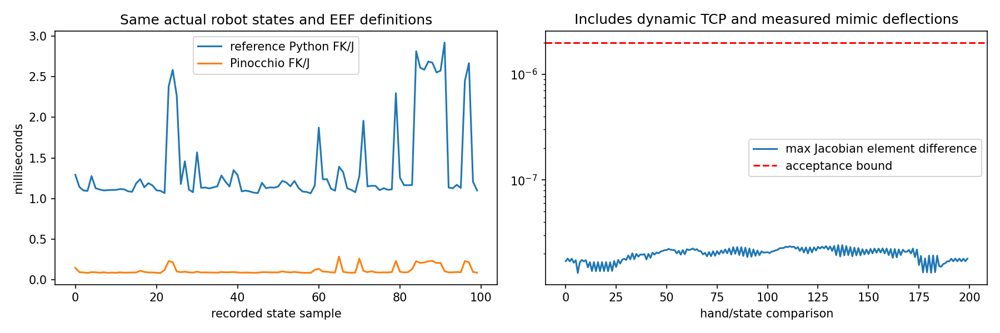

G2 · Pinocchio 模型级接入验证
这是 100 个真实反馈关节状态的离线 FK/Jacobian 对照，不是 Pinocchio 机器人闭环演示，也不是力矩 WBC。在线默认后端没有切换，现有 xense-wbc 环境未安装 Pinocchio。
Pinocchio 4.1.0，Python 3.12.15；同一份 URDF、同一夹爪指尖 EEF、同一实测 mimic 偏差、同一非单位基座变换。
| 检查项 | 结果 |
|---|---|
| 双手 EEF 最大位置差 / 旋转差 | 1.913e-15 m / 1.302e-15 rad |
| Jacobian 最大元素差 | 2.410e-8，小于 2e-6 阈值 |
| 原实现 FK/Jacobian 中位 / P95 | 1.149 / 2.614 ms |
| Pinocchio FK/Jacobian 中位 / P95 | 0.092 / 0.230 ms |
| 模型 nq / nv / 命令自由度 | 46 / 42 / 21，按关节名及 mimic 比例映射 |
| 投影质量矩阵最小特征值 | 6.090e-4，大于零；不等于惯量参数已标定 |
实测图，而不是性能估算

仅模型计算段中位耗时约下降 12.4 倍；不能把它外推成整个机器人控制速度提升 12.4 倍。
已经执行 / 尚待执行
已做模型对照、实测 mimic 偏差测试、同一 QP 的单步结果对照。尚未做 Pinocchio 实际整段控制 A/B、力矩接口或轮地接触控制。
原始指标和输入 SHA256 · 详细可行性研究 · 代码审计 · WBC 技术路线 · 已有 v5 真实回放基线